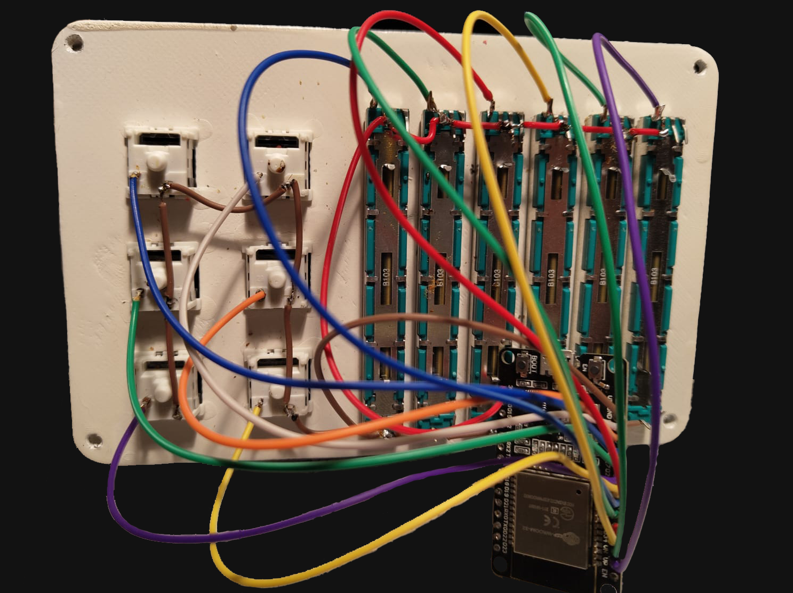

MixR - zrób to sam
Poniżej przedstawiamy pełną instrukcję jak krok po kroku wykonać własne urządzenie. Cały proces nie zajmuje długo, więc można to zrobić w jeden wieczór.

Poniżej przedstawiamy pełną instrukcję jak krok po kroku wykonać własne urządzenie. Cały proces nie zajmuje długo, więc można to zrobić w jeden wieczór.
Link: AliExpress
Link: AliExpress
Link: AliExpress
- 12 szt. śrubek M2, najlepiej M2*5
- 4 szt. śrubek M3
Aby zbudować MixR NIE POTRZEBA WŁASNEJ DRUKARKI 3D. Wszystkie części wraz z obudową można kupić przez internet, jednak drukując je obniżamy koszta.

Model do pobrania TUTAJ
Jeżeli ktoś nie posiada drukarki, obudowę można kupić pod tym LINKIEM
Model do pobrania TUTAJ
Nakładki do kupienia pod tym LINKIEM
Model do pobrania TUTAJ [Więcej informacji w kolejnym rozdziale]
Nakładki do kupienia pod tym LINKIEM
Jeżeli nie zamierzasz drukować przycisków, możesz ominąc ten rozdział ;)
Jeśli chcesz kupić nasze przyciski z szablonami możesz to zrobić TUTAJ
Na stronie można pobrać trzy typy nakładek na klawisze (5,10 i 15 stopni pochylenia) wraz z szablonami.
Poniżej zamieszczone jest wideo instruktażowe:
Montaż można zacząć od górnej części obudowy. Wciśnij przełączniki w kwadratowe dziury. Powinny one idealnie pasować, a wkładając pstrykać.
Następnie od tyłu włożyć potencjometry i przykręcić je śrubkami M2*5.
Przygotuj płytkę ESP-32S do lutowania. Osobiście polecam wylutować piny które są w zestawie, gdyż wtedy będzie łatwiej przylutować wszystkie przewody.


Schemat w pliku PDF: POBIERZ
Połącz przewody tak, jak na powyższym schemacie. Każdy przełącznik ma swój osobny przewód. Dodatkowo jest jeden wspólny dla uziemienia, który można prowadzić od przycisku do przycisku. Tak samo jest wspólny przewód dla zasilania potencjometrów
Gdy już wszystkie przewody są przylutowane, można przykręcić płytkę do dolnej części obudowy.

#include <stdint.h>
#include <Arduino.h>
uint8_t btn_prev_12;
uint8_t btn_prev_13;
uint8_t btn_prev_14;
uint8_t btn_prev_25;
uint8_t btn_prev_26;
uint8_t btn_prev_27;
uint16_t slider_32;
uint16_t slider_33;
uint16_t slider_34;
uint16_t slider_35;
uint16_t slider_36;
uint16_t slider_39;
uint16_t slider_new_32;
uint16_t slider_new_33;
uint16_t slider_new_34;
uint16_t slider_new_35;
uint16_t slider_new_36;
uint16_t slider_new_39;
float limit = 0.9;
void setup() {
Serial.begin(115200);
pinMode(12, INPUT_PULLUP);
pinMode(13, INPUT_PULLUP);
pinMode(14, INPUT_PULLUP);
pinMode(25, INPUT_PULLUP);
pinMode(26, INPUT_PULLUP);
pinMode(27, INPUT_PULLUP);
pinMode(32, INPUT_PULLUP);
pinMode(33, INPUT_PULLUP);
pinMode(34, INPUT_PULLUP);
pinMode(35, INPUT_PULLUP);
pinMode(36, INPUT_PULLUP);
pinMode(39, INPUT_PULLUP);
btn_prev_12 = digitalRead(12);
btn_prev_13 = digitalRead(13);
btn_prev_14 = digitalRead(14);
btn_prev_25 = digitalRead(25);
btn_prev_26 = digitalRead(26);
btn_prev_27 = digitalRead(27);
slider_32 = analogRead(32);
slider_33 = analogRead(33);
slider_34 = analogRead(34);
slider_35 = analogRead(35);
slider_36 = analogRead(36);
slider_39 = analogRead(39);
}
void loop() {
delay(150); // this speeds up the simulation
if (digitalRead(12) == LOW && btn_prev_12 == HIGH) {
Serial.println(2);
}
btn_prev_12 = digitalRead(12);
if (digitalRead(13) == LOW && btn_prev_13 == HIGH) {
Serial.println(1);
}
btn_prev_13 = digitalRead(13);
if (digitalRead(14) == LOW && btn_prev_14 == HIGH) {
Serial.println(4);
}
btn_prev_14 = digitalRead(14);
if (digitalRead(25) == LOW && btn_prev_25 == HIGH) {
Serial.println(3);
}
btn_prev_25 = digitalRead(25);
if (digitalRead(26) == LOW && btn_prev_26 == HIGH) {
Serial.println(6);
}
btn_prev_26 = digitalRead(26);
if (digitalRead(27) == LOW && btn_prev_27 == HIGH) {
Serial.println(5);
}
btn_prev_27 = digitalRead(27);
slider_new_32 = analogRead(32);
slider_new_32 = map(slider_new_32, 0, 4095, 0, 100);
slider_new_33 = analogRead(33);
slider_new_33 = map(slider_new_33, 0, 4095, 0, 100);
slider_new_34 = analogRead(34);
slider_new_34 = map(slider_new_34, 0, 4095, 0, 100);
slider_new_35 = analogRead(35);
slider_new_35 = map(slider_new_35, 0, 4095, 0, 100);
slider_new_36 = analogRead(36);
slider_new_36 = map(slider_new_36, 0, 4095, 0, 100);
slider_new_39 = analogRead(39);
slider_new_39 = map(slider_new_39, 0, 4095, 0, 100);
if (abs(slider_new_32 - slider_32) > limit){
slider_32 = analogRead(32);
int percentage_32 = map(slider_32, 0, 4095, 0, 100);
Serial.println(5000+percentage_32);
}
if (abs(slider_new_33 - slider_33) > limit){
slider_33 = analogRead(33);
int percentage_33 = map(slider_33, 0, 4095, 0, 100);
Serial.println(6000+percentage_33);
}
if (abs(slider_new_34 - slider_34) > limit){
slider_34 = analogRead(34);
int percentage_34 = map(slider_34, 0, 4095, 0, 100);
Serial.println(3000+percentage_34);
}
if (abs(slider_new_35 - slider_35) > limit){
slider_35 = analogRead(35);
int percentage_35 = map(slider_35, 0, 4095, 0, 100);
Serial.println(4000+percentage_35);
}
if (abs(slider_new_36 - slider_36) > limit){
slider_36 = analogRead(36);
int percentage_36 = map(slider_36, 0, 4095, 0, 100);
Serial.println(1000+percentage_36);
}
if (abs(slider_new_39 - slider_39) > limit){
slider_39 = analogRead(39);
int percentage_39 = map(slider_39, 0, 4095, 0, 100);
Serial.println(2000+percentage_39);
}
slider_32 = analogRead(32);
slider_32 = map(slider_32, 0, 4095, 0, 100);
slider_33 = analogRead(33);
slider_33 = map(slider_33, 0, 4095, 0, 100);
slider_34 = analogRead(34);
slider_34 = map(slider_34, 0, 4095, 0, 100);
slider_35 = analogRead(35);
slider_35 = map(slider_35, 0, 4095, 0, 100);
slider_36 = analogRead(36);
slider_36 = map(slider_36, 0, 4095, 0, 100);
slider_39 = analogRead(39);
slider_39 = map(slider_39, 0, 4095, 0, 100);
}
Plik main.cpp: POBIERZ
Do poprawnego wgrania softu na płytkę potrzebujemy programu ArduinoIDE lub Visual Studio Code z rozszerzeniem PlatformIO.
Następnie wrzucamy powyższy plik w wybrany program i klikamy jednocześnie "build" (lub compile) w programie oraz przytrzymujemy przycisk BOOT na płytce. Po zakończeniu powinien wyskoczyć komunikat, że kompilowanie przebiegło pomyślnie.

Po wykonaniu powyższych kroków przychodzi czas na skręcenie wszystkiego w całość. Zacząć można od przykręcenia płytki do obudowy.
Następnie całość możemy skręcić ze sobą korzystając ze śrub M4.
Ostatnią rzeczą, którą należy zrobić jest zamocowanie nakładek na klawisze i potencjometry. W ten oto sposób mamy kompletne urządzenie.